≈30 m spacing
Wider corridor configuration with higher coverage demand.
ENGINEERING • STREET LIGHTING & MUNICIPAL INFRASTRUCTURE
Across multiple municipalities, my work covered GPS-based field surveys, road-width and pole assessment, luminaire calculations, smart-control concepts, BOQ preparation, technical reporting and municipal coordination. The projects below are grouped by the engineering problem each one presented rather than repeating the same job description.
ROAD LIGHTING STUDIES
95.29 km • 45 corridors
Municipality-wide feasibility and route selection 02≈6 km focused corridor
Drone-assisted survey and geometry-based design 03145.32 km • 58 routes
City-scale survey and 81 km prioritization 0494.89 km • 32 corridors
Infrastructure reuse and centralized monitoring 05≈70–80 km network
Urban, steep, river-side and forest-road conditionsMY RECURRING ROLE ACROSS THESE STUDIES
I participated directly in field surveying and GPS/road measurements, assessed existing poles and feeder conditions, organized survey data, worked on pole spacing and luminaire selection, contributed to estimates and BOQs, prepared substantial portions of technical reports and presentations, and communicated with municipal officials.
ROAD LIGHTING • CASE 01
Morang, Nepal • 2021
Before a city can be lit intelligently, somebody has to understand it one road at a time.
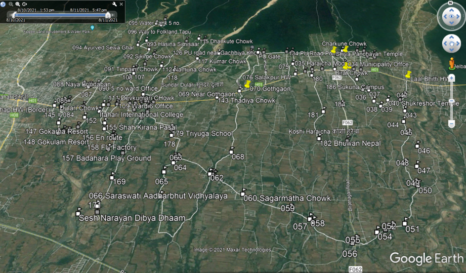
THE ENGINEERING QUESTION
The municipality supplied a road list, but individual routes crossed ward boundaries. A route-based survey became more practical than treating each ward as an isolated area.
I travelled through the proposed corridors, collected GPS points, measured road widths, assessed existing electricity poles and observed traffic, settlements and site constraints. After the survey, I worked on road-list spreadsheets, pole quantities, 60 W / 90 W / 120 W lighting requirements, estimates and the final feasibility report.
FEASIBILITY
Not every road was carried forwardSome corridors were screened out because of narrow road width, irregular pole distribution, possible visibility obstruction or difficulty installing additional poles. The study was not about maximizing the number of lights; it was about identifying where municipal investment made practical engineering sense.
ROAD LIGHTING • CASE 02
Kathmandu, Nepal • 2020
A six-kilometre road does not need one lighting solution repeated six kilometres.
DESIGN BY GEOMETRY
The TU Gate to Pushpalal Park corridor was divided into road-width categories rather than treated as one uniform street.
I participated in the field and drone-survey process, helped identify the 8 m, 10 m and 13 m sections, and worked on lux calculations, pole spacing, luminaire requirements and the BOQ. Wider sections required different spacing and arm arrangements than narrower sections, connecting physical road geometry directly to lighting design.
Wider corridor configuration with higher coverage demand.
Intermediate road geometry and lighting requirement.
Narrower corridor with correspondingly tighter spacing.
FIELD CONSTRAINT • 2020
Travel, site access and face-to-face coordination were more difficult during COVID. The challenge was not one dramatic technical failure; it was keeping a multi-stage survey, calculation, reporting and municipal-communication workflow moving when interaction itself had become a constraint.
ROAD LIGHTING • CASE 03
Kailali, Sudurpaschim • 2021
Surveying 145 kilometres was only the beginning. The harder question was deciding which kilometres should come first.
CITY-SCALE PLANNING
The surveyed roads ranged from dense urban corridors to ring roads, lightly settled areas, roads under construction and jungle-boundary routes.
I worked on the road-list data, GPS and physical survey observations, 60 W / 90 W / 120 W requirements, pole spacing, the BOQ and the final feasibility report. A major part of the analysis was separating the full feasible network from an approximately 81 km high-priority implementation package.
WHAT I TOOK FROM IT
The project moved from field measurements to a structured road database, lighting calculations, priority routes, technical specifications, estimates and a municipality-facing implementation plan.
ROAD LIGHTING • CASE 04
Chitwan, Nepal • 2021
The city already had streetlights. The problem was that many of them were no longer doing their job.
START WITH WHAT EXISTS
Bharatpur already had lighting infrastructure, including solar units whose usefulness had been reduced by operation and maintenance problems.
The feasibility study therefore considered existing poles as assets rather than automatically replacing everything. Suitable existing locations were retained while new 7 m and 8 m poles, 90 W and 120 W luminaires, distribution cable and feeder/control cabinets were planned where required.
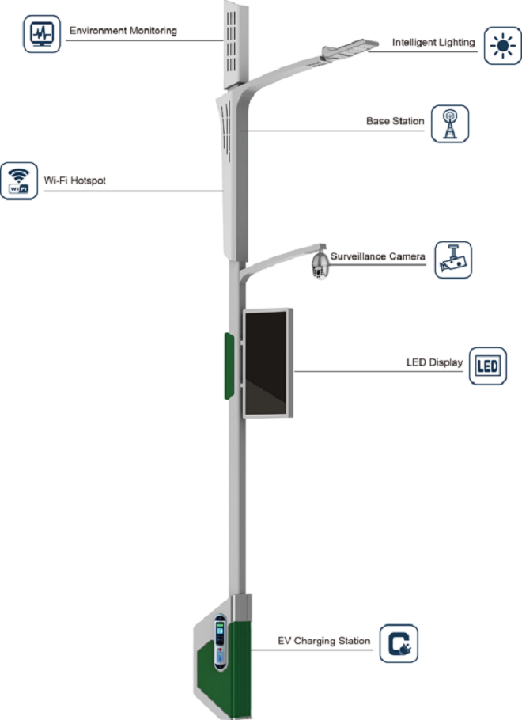
CENTRAL CONTROL
The proposed CCMS architecture moved beyond independent fixtures. Lighting could be grouped, switched, dimmed and monitored centrally, with fault reporting and GIS-based asset visibility improving maintainability.
The study also explored how the lighting network could later support other smart-city services. These were future platform possibilities rather than claims that every function was installed.
MAINTENANCE-AWARE PLANNING
Sometimes the recommendation was “not yet.”Some roads were unsuitable because of road width, pole distribution or installation difficulty. Other locations could be technically possible but better delayed because of future road expansion, traffic conditions or potential site conflicts.
ROAD LIGHTING • CASE 05
Kathmandu, Nepal • 2021
One municipality. Completely different roads. One lighting design could not fit them all.
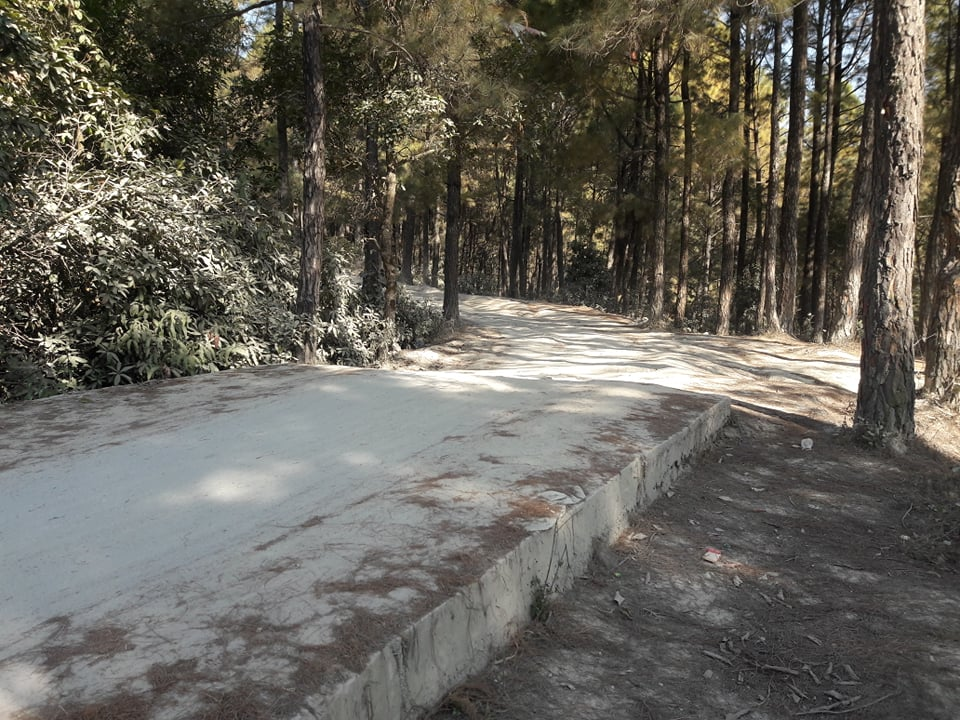
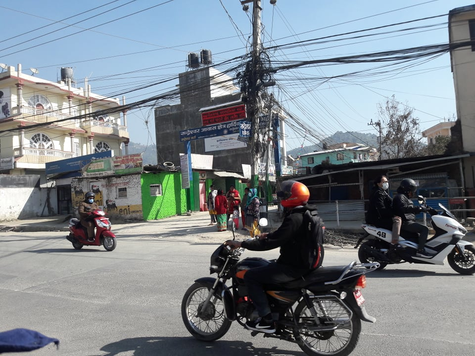
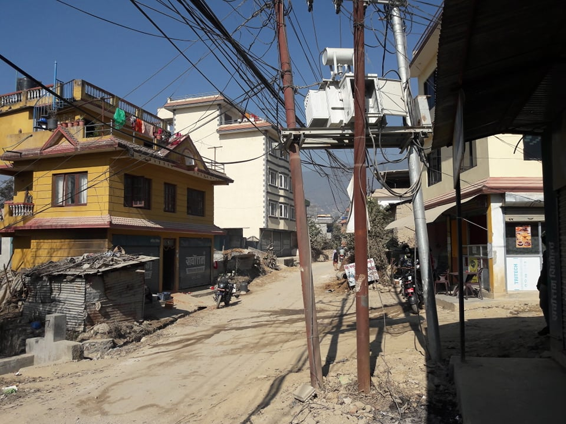
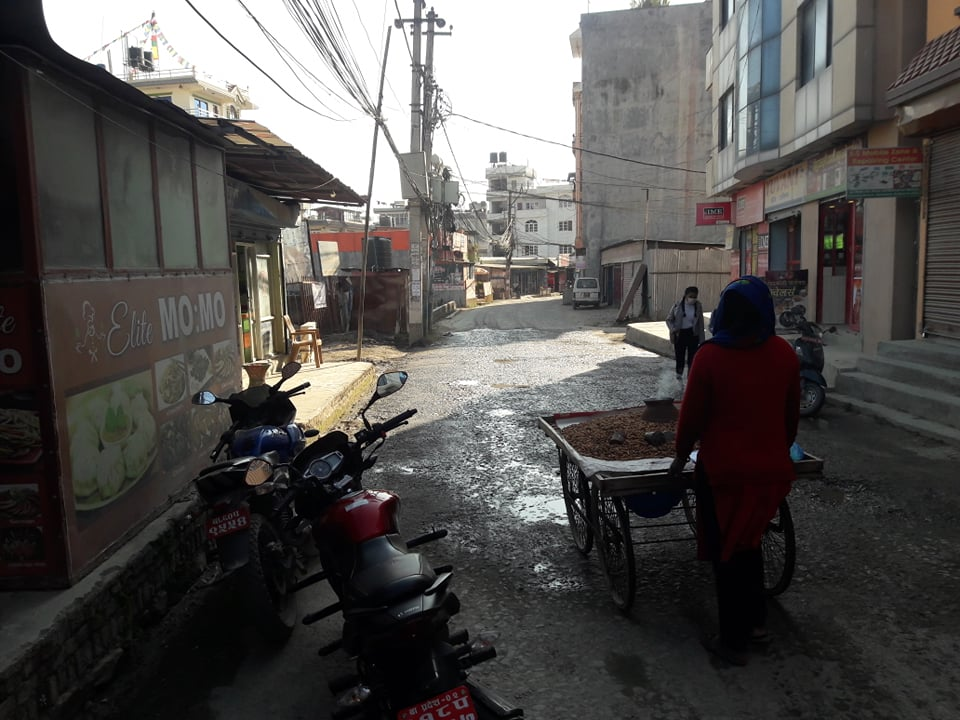
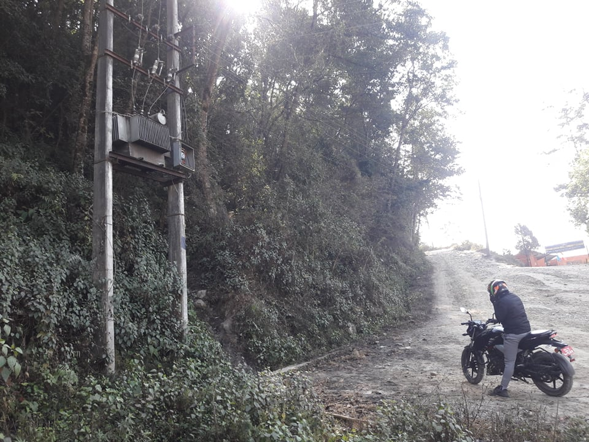
WHY THIS ONE WAS DIFFERENT
The survey covered dense residential areas, busy junctions, roads under construction, river-bank corridors, steep roads and forested routes.
Field observations included road width, existing pole condition, traffic and pedestrian activity, settlement patterns and feeder requirements. Some routes could use existing poles; others had uneven pole distribution, underground wiring in progress or required new poles entirely.
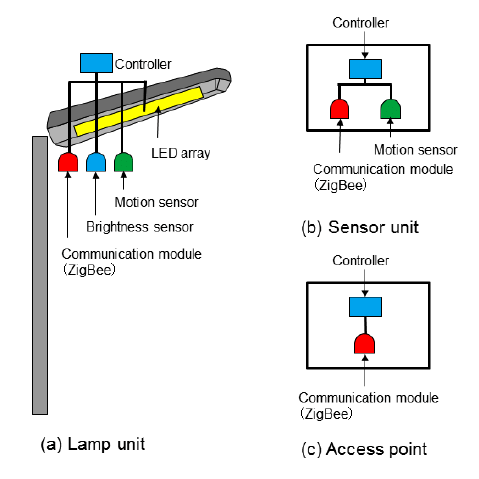
NETWORK THINKING
The proposed system combined road-specific luminaires with management software, feeder panels and smart-control capabilities. The portfolio keeps these as proposed system functions and does not imply that optional smart-city features were all installed.
Data note: project documents contain different revisions of the surveyed/planned route total, including 70.7 km and later route schedules approaching 80 km. The portfolio therefore uses “≈70–80 km” rather than presenting an uncertain revision as one exact number.
HIGH-MAST LIGHTING
High-mast lighting was treated separately from road lighting because the design problem changes from following a corridor to covering major junctions, open urban nodes and large public spaces.
HIGH-MAST CASE STUDY
Kathmandu, Nepal • Feasibility Study
A road can be illuminated pole by pole. A major junction cannot always be treated the same way.
LOCATION SELECTION
The study evaluated locations where conventional streetlight arrangements could require too many poles or provide poor coverage of large urban spaces.
Selected mast heights ranged from 12 m to 25 m, with 200 W and 400 W floodlights and between two and twelve luminaires per mast depending on the site. Priority locations included major Kathmandu nodes such as Singhadurbar, Maitighar, Tinkune, the Airport, Durbarmarg, Lagan Tole, New Road and Gaushala.
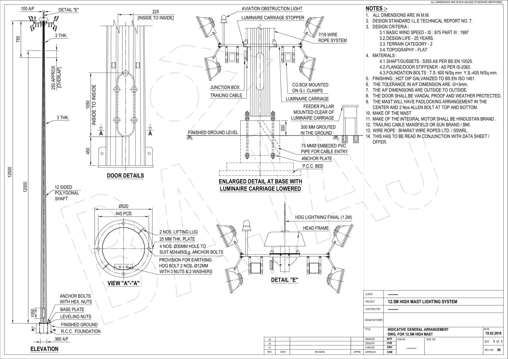
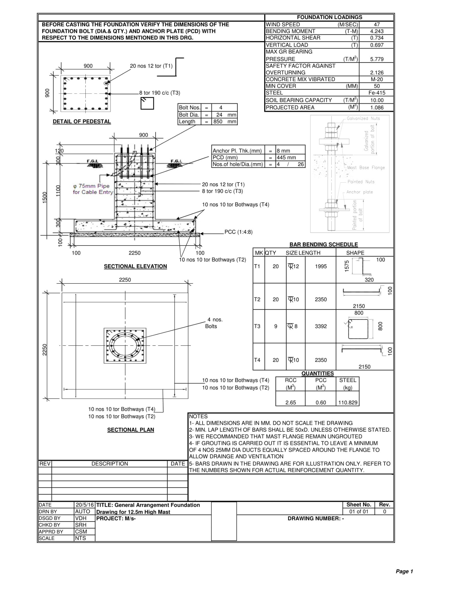
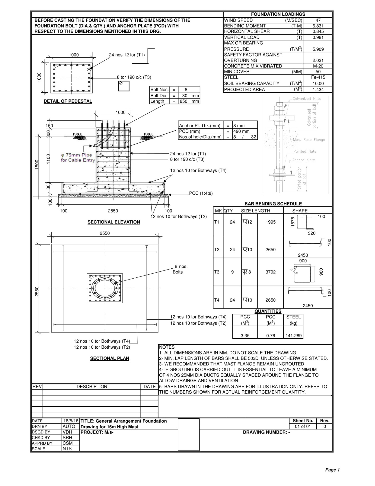
WHAT THE DRAWINGS MAKE CLEAR
The light is only the visible part.Increasing mast height affects structural loading, base dimensions, anchoring, foundations, lifting equipment, electrical systems and maintenance access. My involvement extended from site assessment and lighting planning into BOQs, specifications, foundation/arrangement drawing coordination, reporting and the final feasibility presentation.
THE COMMON THREAD
Across these projects, the repeated responsibility was useful rather than repetitive: go to the road, understand the infrastructure, calculate what is needed, document it clearly, and make the result usable by the municipality.
The individual case studies highlight different challenges so the portfolio shows range without pretending that each municipal assignment was a completely unrelated kind of work.